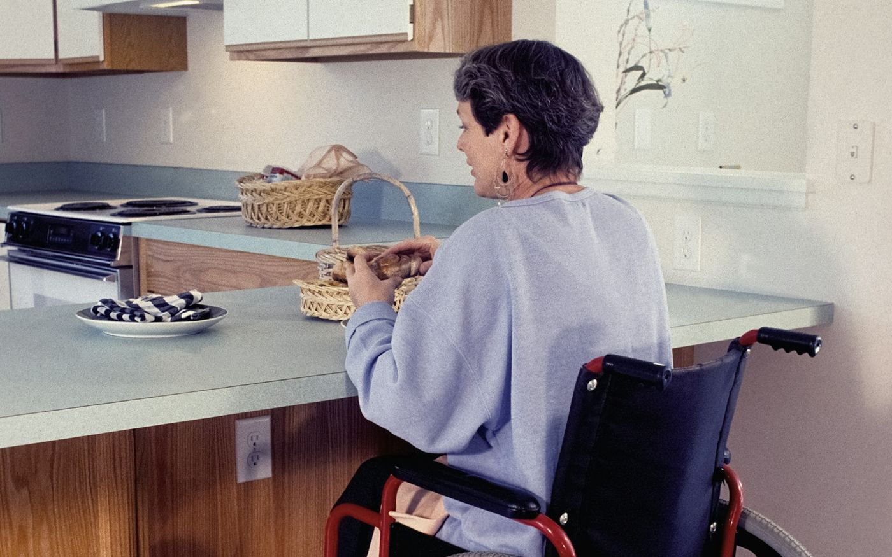

Accessibility & aging in place
Accessibility Renovations in Cornwall, Ontario
Home modifications for seniors and people with mobility needs — grab bars, railings, ramps, wider doorways and barrier-free bathrooms, so the house you know keeps working for you.
Most people would rather stay in their own home than move, and most homes in Cornwall were never built with a walker or a wheelchair in mind. Post-war bungalows and split-levels have steps at every entrance, 28-inch bedroom doors and bathrooms with no room to turn. Accessibility renovations close that gap. Sometimes it is a railing and two grab bars. Sometimes it is a ramp, wider doorways and a main-floor bathroom rebuilt around a wheelchair.
These jobs fail in predictable ways. Grab bars screwed into bare drywall pull out the first time someone puts their full weight on them. Ramps built too steep are harder to use than the stairs they replaced. A doorway widened by two inches still catches the wheel rims. We build aging-in-place and wheelchair accessible modifications to carry real loads and fit real equipment. If an occupational therapist has assessed the home, bring their recommendations and we will build to them.
If you are a son or daughter arranging this for a parent, that is welcome. We are happy to talk it through with you, with them, or with both of you together, and to plan the work so the person living there can stay in the house while it happens.

Scope of work
Accessibility renovations and home modifications we do
Grab bars, anchored properly
Grab bars beside the toilet, in the shower and at the tub, fastened into studs or into solid blocking we add behind the wall. Never into drywall alone. In an existing tiled shower we use anchors rated for the job rather than tearing the tile out.
Handrails and stair railings
Continuous handrails on both sides of the stairs, inside and out, at a height and diameter a hand can actually grip. Basement stairs, porch steps and the two-step drop into a sunken living room are where a missing handrail matters most.
Wheelchair ramps and step-free entries
Wood ramps built at a gentle slope with level landings, edge protection and handrails, or a front entry regraded and rebuilt so there is no step at the door. We plan the ramp around the lot first, because a gentle slope takes more room than most people expect.
Wider doorways and wheelchair-friendly layouts
Doorways widened, with headers installed where the wall is load-bearing. Hallway pinch points opened up and walls moved to give a wheelchair room to turn. Where the stairs have become the problem, we convert a main-floor den or dining room into a bedroom so everything daily is on one level.
Accessible bathrooms and walk-in showers
Curbless walk-in showers, tub-to-shower conversions, comfort-height toilets, fold-down shower seats and slip-resistant flooring, all properly waterproofed. Wet floors and a high tub edge make this the room to start with. More on our bathroom renovations page.
Accessible kitchens
A lowered counter section, a roll-under sink with clear knee space, pull-out shelves in place of deep base cabinets, and switches and outlets moved to where a seated person can reach them. Often a few targeted changes rather than a full kitchen renovation.
Options
Aging in place or full wheelchair access
Accessibility work covers a wide range. Most jobs fall into one of these three, and knowing which one you are in keeps the scope and the budget honest.
Aging-in-place safety
For someone who is still mobile but less steady than they used to be. Grab bars, second handrails, better lighting on the stairs, removing a threshold or a loose step. Small jobs, usually done in a day or two, and they make the biggest difference to the risk of a fall.
- Usually a day or two
- Grab bars and handrails
- Lowest cost
Wheelchair accessible renovations
For a home that has to work for a wheelchair or walker every day. A ramp or step-free entry, doorways widened, turning space in the bathroom and bedroom, and a curbless shower. This is renovation work with framing changes and often a permit, so it is planned and quoted as a project.
- Ramps and step-free entries
- Wider doorways
- Barrier-free bathroom
Planning ahead
For anyone renovating now who expects to stay in the house for decades. Blocking for future grab bars, a 36-inch door where a 30-inch one would have gone, a shower with no curb. Built in during another renovation, it costs very little. Added later, it means opening walls back up.
- Built into another renovation
- Costs little now
- Avoids reopening walls
Wheelchair ramps take more room than people expect
The widely used guideline for a wheelchair ramp is a slope of no more than 1 in 12: one foot of ramp for every inch of rise. That is the figure in the Ontario Building Code’s barrier-free section, which is written for public buildings, and it is the right target at home too. A porch three steps up is about 21 inches off the ground, so it needs roughly 21 feet of ramp, plus a level landing at the top and bottom and another wherever the ramp turns or runs long.
That is why we start a ramp job by measuring the lot, not by drawing the ramp. A switchback, a ramp along the front of the house, or a regraded walkway to a lowered entry may suit the property better than one straight run. Anything steeper than 1 in 12 is hard to push up and dangerous to come down, and we will not build one.
Service areas
Accessibility renovations across Cornwall & SD&G
Based in Cornwall and working across Stormont, Dundas and Glengarry. If your town is not listed, call us anyway — we travel.
FAQ
Accessibility renovations: common questions
How steep can a wheelchair ramp be?
The standard to aim for is 1 in 12: one foot of ramp for every inch the ramp has to climb. That is the maximum slope in the Ontario Building Code’s barrier-free requirements for public buildings, and while a private home is not bound by it, it is the slope most wheelchair users can manage on their own. Long ramps also need level landings to rest on, and the Code’s figure for public buildings is one at least every 9 metres. A gentler slope is better still if the lot has room for it.
Do I need a permit to build a wheelchair ramp in Cornwall?
It depends on the height and on how the ramp attaches to the house. A ramp is treated much like a deck: a short ramp over a single step is often fine without one, while a long ramp to a raised porch usually needs one. We confirm the requirements with the City of Cornwall Building Division, or with the township or the Mohawk Council of Akwesasne if your home is outside the city, and we handle the application where a permit is needed.
Can grab bars be installed on drywall?
Not safely on drywall alone. A grab bar has to hold the full weight of a person who is falling, and drywall anchors are not made for that. We fasten grab bars into the wall studs, or open the wall and add solid wood blocking where the bar needs to go. In a tiled shower where opening the wall is not practical, we use anchors made and rated specifically for grab bars.
How wide should a doorway be for a wheelchair?
Ontario’s barrier-free standard for public buildings calls for a clear opening of about 850 mm, roughly 33.5 inches, measured with the door open. There is no such rule for a house, but it is a sensible target. It usually means replacing a 28- or 30-inch interior door with a 36-inch one, or fitting swing-clear hinges that move the door out of the opening. Widening a door in a load-bearing wall needs a new header, which we install as part of the job.
Can I arrange this for a parent, and can they stay home during the work?
Yes to both. We can meet you at the house, talk to whoever is living there, and send the written quote to whoever is handling it. Grab bars, railings and most ramps are done in a few days with the person at home. For a bathroom or a layout change, we plan the sequence so there is always a working toilet and a clear, safe route through the house.
Free quote
Get a free quote for your accessibility renovation
Tell us what you are planning. We reply to every inquiry, usually within one business day.
Services
Other things we do
Deck building
Custom pressure-treated, cedar and composite decks engineered for Eastern Ontario frost.
Read more 02Fence installation
Privacy, picket, PVC, aluminum and chain link — set deep, set straight, set square.
Read more 03Siding installation
Vinyl, engineered wood and board-and-batten, with soffit, fascia and eavestrough.
Read more 04Window replacement
ENERGY STAR windows and doors installed to spec, air-sealed and properly flashed.
Read more 05Bathroom renovations
Full gut-and-rebuild bathrooms, tub-to-shower conversions and accessible walk-ins.
Read more 06Kitchen renovations
Layout changes, custom cabinetry, islands and finish carpentry done by one crew.
Read moreArranging this for a parent or family member?
Call us and describe the house and who needs to use it. We will talk it through with you and with them, then come out to look. The written quote is free, and there is no obligation.